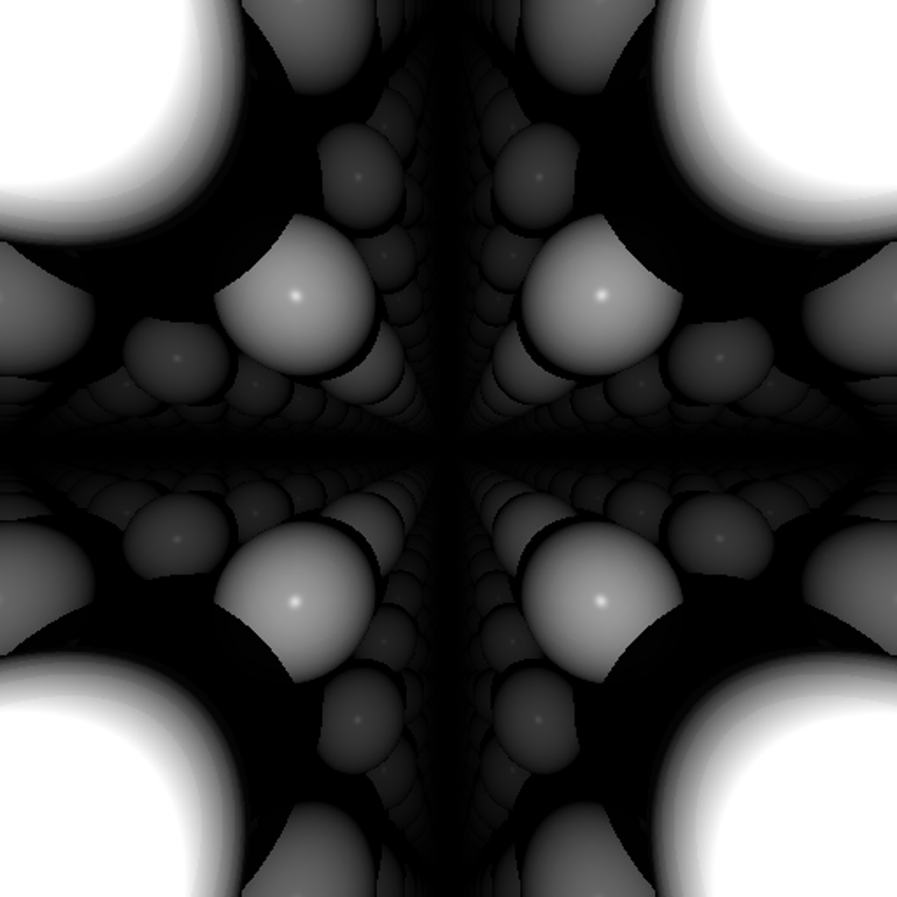
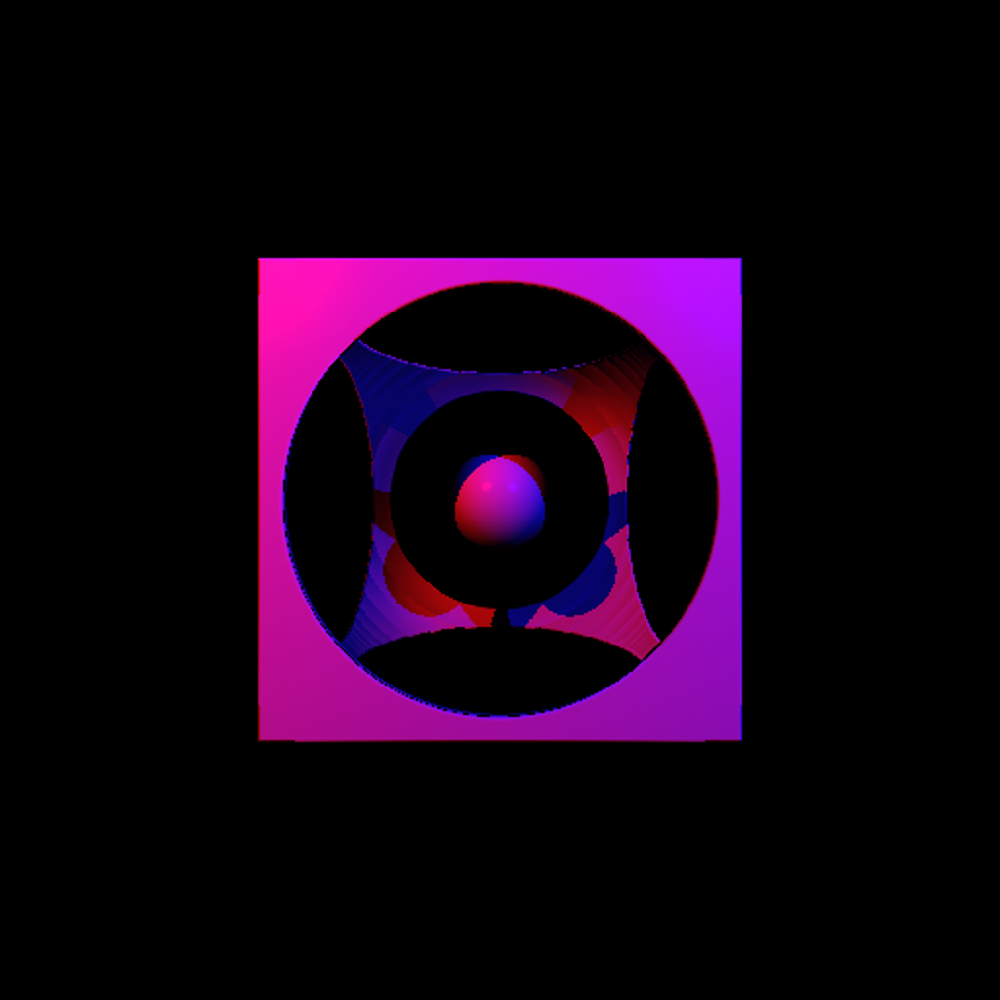
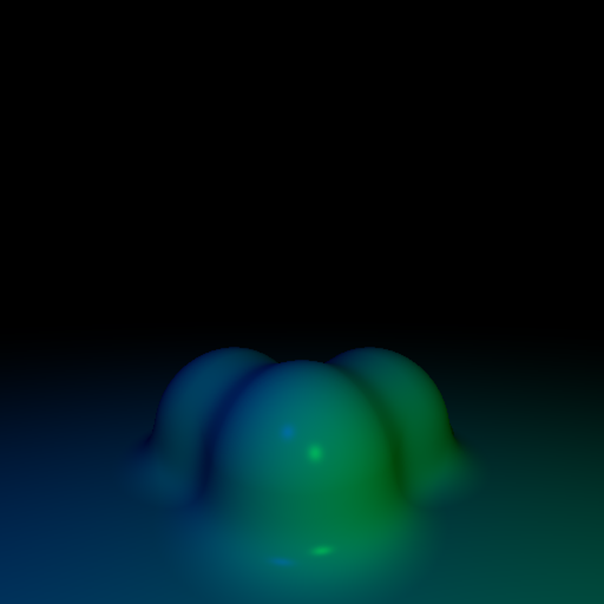
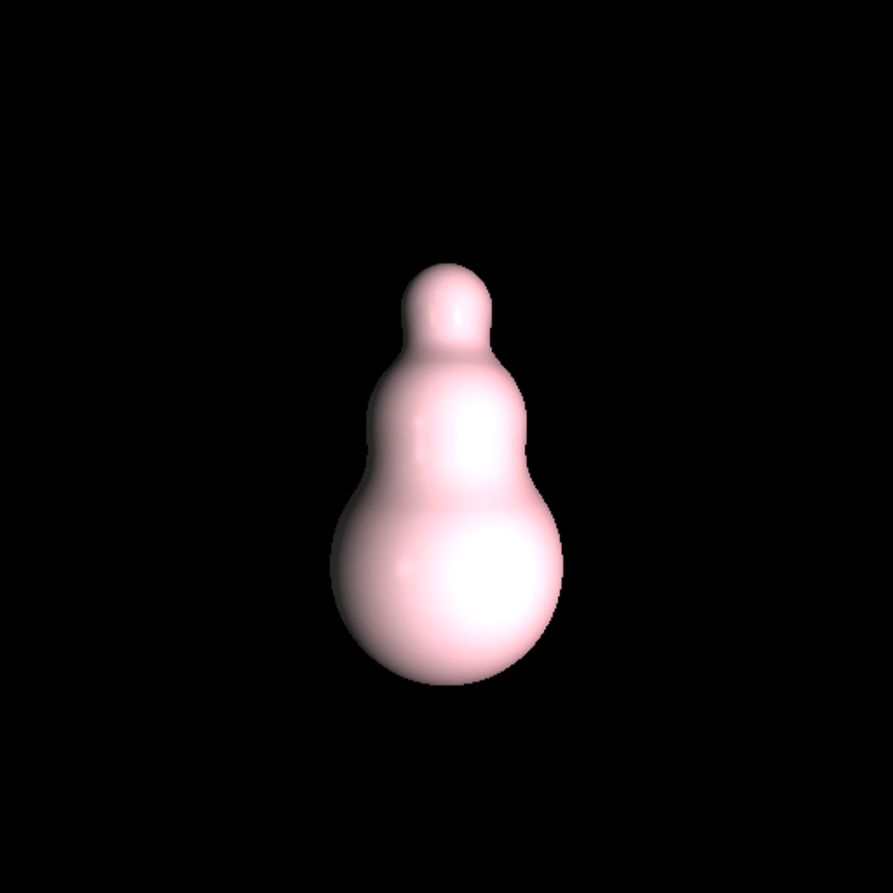
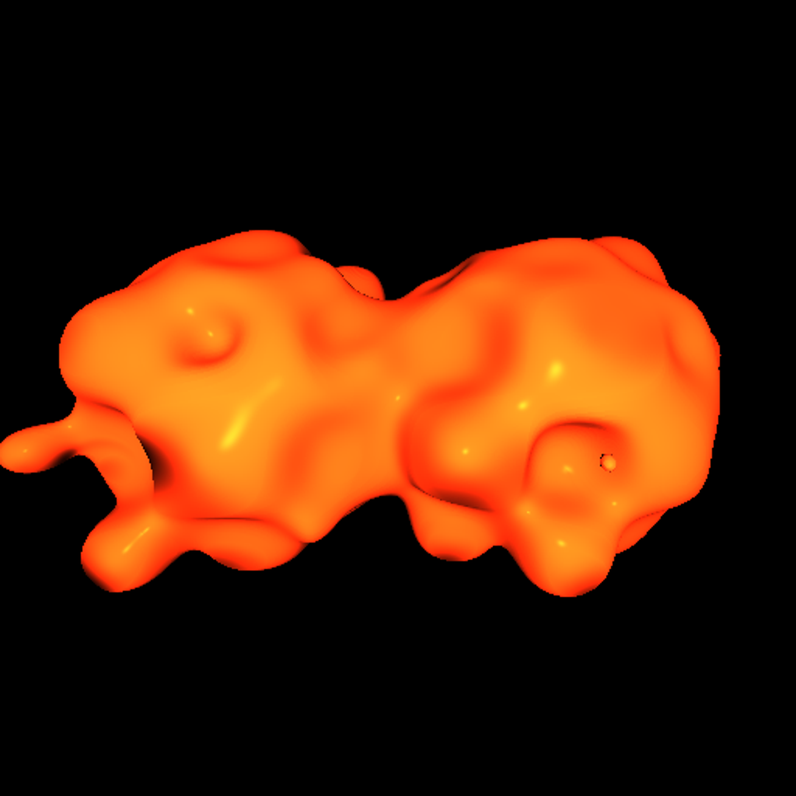

By Myles Pasetsky (Pd 9)
My Project - Ray Marching
Ray marching (a cousin of the more popular ray tracing) is a 3D rendering technique that is designed to
render implicit surfaces, which means they are not solved. The formulas can only provide a distance to a point. This allows for interesting and complex
surfaces to be rendered. My project provides a small
set of primitive shapes
and a collection of modifiers that work on any primitive shape.
Some simple scenes I setup with merely a few line of code are here. These would all be still lifes
as they all took less than 60 seconds to render:




Difficulties - Speed
The main difficulty I came at odds with was making Python fast enough to render scenes
in a reasonable amount of time, while also limiting ugly code.
At the core of the algorithm is calculating a color for EVERY pixel on the screen, and
these calculations can include complex formulas for
distance and many light sources. One optimization I had to do to make this project even
possible was to avoid using a turtle to draw each pixel. This was too slow, and only setup a 30x30 (unseeable) scene
with random numbers (which are not an expensive calculaion) in 60 seconds. What I had to do was instead setup an image
and store the calculations into that image, and when it was ready, use that as a turtle shape. This method ended up working,
and displaying an image no longer became a point of concern in terms of time.
Techniques
One technique I researched for this project was the ray marching algorithm itself. I had
seen it before, but never coded it or learned how it worked. This allowed me to draw (not shade or light / make it look good)
shapes and surfaces.
Another technique I had research is Lighting. I was
able to draw white shapes, but often times the complexity of these shapes was unnoticable. This is what shading and lighting are for.
I found and compiled formulas for phong lighting (namely the wikipedia article) and fit them into my program. I also allowed the program to work
with several light sources to mix colors.
Another technique I had to look into was how shapes and images worked in turtle. The way the algorithm
is fast enough is by developing an image first, and using it as a shape.
However, doing this through
provided turtle functions was going to be suboptimal because it required having a GIF image file. The image would store
the calculations for the screen, and its location would be given to a turtle add shape function.
However, I thought this was silly. Why was turtle restricted to GIFs? And why was it restricted to files? I found
the source code, and found a way to pass in an array (which stores the color values of each pixels) and register
it as a turtle shape. This way, the code is "self contained" when it runs and doesn't require creating a new
file to work (although it can because saving what is rendered is useful, but should be able to be turned off). This also means that turtle was not even really restricted to GIFs at all, and I find it odd they chose
GIFs to be the one supported type.
The final technique/topic I had to look into was why my Python was slow and how to make it faster.
I found that there was an time overhead to using structures I liked to use in other languages that don't have this overhead, which
slowed down my project by a noticeable amount. Howevere, using this structures was critical to the quality of the code. I also had to look
into multiprocessing in Python to speed up my program. I learned that threading in Python is actually different than multiprocessing,
which was new to me. It was a rate limiting step in my code for awhile, as the code was stuck not using as much of the CPU as possible.
Time Spent
This is a number I am unsure of. I started early and finished late (although I had to stop to study for tests just a little bit).
I put a decent amount of research into this project and spent more time than I would like to admit trying things that totally didn't pan out (e.g. adding optimizations that made my code 1x as fast).
However, as a rough estimate, I might say a good ~24 hours on this project, but I am actually not sure.
Resources
There are some videos and articles I used -- there are probably more but these are the most useful.
- Phong Reflection Model
- Video on Lighting / Phong
- Descriptive page on Signed Distance Functions
- Page touching on SDFs, Ray Marching, Constructive Solid Geometry
- Video tutorial that codes a simple ray marcher
- Cool, short video on ray marching
- Another cool, short video on ray marching
Instructions
Linux is recommended to run this just because I wrote the code while on Linux and the Python multiprocessing library is much different
on Windows and less flexible, so it must use the threading library, which doesn't use multiple cores. This could end up being ~4x slower on Windows.
The project can be downloaded, and then two commands likely need to be run:
pip install -r requirements.txt, which install the libraries (this is just in case)python main.py, which runs the code
These commands should run a pre-existing example, but to configure the code:
Visit
example.py to see the function names of the example scenes and how to make a sceneVisit
main.py to see where to call the example functions or where to put your ownVisit
constants.py to configure some backend stuff (threading, lighting, screen size)
More Cool Scenes
